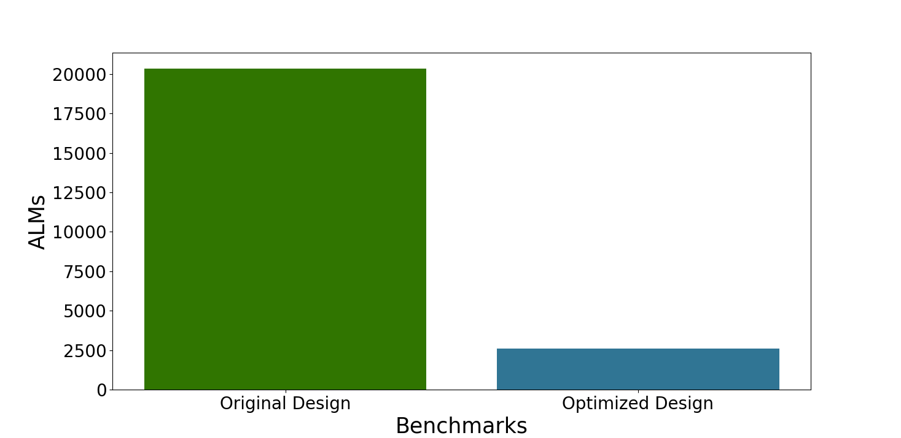

Highlighting My Skills, Accomplishments, and Passion for Research
Differentiation, Integration, Multivariable Calculus, Differential Equations
Start from this ASPLOS'21 paper:
Analytical Characterization and Design Space Exploration for Optimization of CNNsBottle-neck focused on: Moving data through the memory hierarchy
The total volume of data movement between cache and main memory satisfies:
\( DV_{it, jt, kt} = N_i N_j N_k (\frac{1}{T_i}+\frac{1}{T_j}+\frac{2}{N_k})\) (1)
\( T_i T_j + T_i T_k + T_j T_k \le C \) (2)
Compared with oneDNN and TVM:
Speed up 1.26x over oneDNN, 1.53x over TVM
(Using Yolo as testbench, on intel i9-10980XE)
What we are trying to do:
Research Intern remote
Instructed by and colleborated with Dr. Yu Zeng
October, 2022 - March, 2023
Working on hardware design simulation accelaration;
Using the idea of compiler optimization;
Saving time, and resource comsumption on FPGA;
Has been estimated on multiple harware designs,
Including deep learning accelerator, CPU core, and hardware floating-point units
Preparing to publish on ICCAD
Figure 1. Comparison of Time Consumption During Simulation of Original and Optimized Design (TVM-VTA and Berkeley-Hardfloat)
Figure 2. Comparison of FPGA Resource Usage for Original and Optimized Design of TVM-VTA(Based on DE10-Nano Kit)
Hardware Engineer Remote
"One Core for Life" Project
Auguest, 2022 - Nov, 2022
Implemented a five-stage pipeline CPU core from scratch
Based on RISC-V 64IM ISA, Using CHISEL;
Implemented its GEM5-like simulation framework with C++, based on Verilator.
Passed the riscv-tests
Figure 3. The Transistor with van der Waals heterostructures
Research Intern IFFS, UESTC
March, 2022 - June, 2022
Built a transistor using 2D material;
Measured its electronic properties when bending;
Read papers in this area;
Started to figuring out how scientific research works.